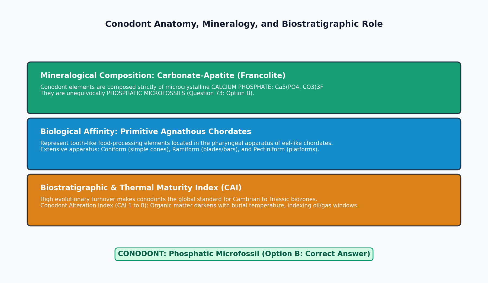

Conodonts are microscopic, tooth-like skeletal elements ($0.1 - 2\text{ mm}$ size) belonging to an extinct group of primitive, soft-bodied, eel-like agnathan marine vertebrates (Class Conodonta, Phylum Chordata). In micropaleontology and petroleum geology, conodonts are premier biostratigraphic index fossils, and mineralogically, a conodont is fundamentally a PHOSPHATIC microfossil.

| Microfossil Group | Primary Chemical Composition | Mineral Phase | Biological Affinity | Geological Range |
|---|---|---|---|---|
| Conodonts | Calcium Phosphate | Carbonate-Apatite (Francolite) | Primitive Agnathan Chordates | Late Cambrian to LATEST TRIASSIC (Extinct) |
| Foraminifera | Calcium Carbonate (or agglutinated) | Calcite or Aragonite | Granuloreticulosean Protists | Early Cambrian to RECENT |
| Radiolaria | Silica (Hydrated) | Amorphous Biogenic Opal-A | Actinopod Protists | Early Cambrian to RECENT |
| Diatoms | Silica (Hydrated) | Biogenic Opal (Frustules) | Photosynthetic Bacillariophyte Algae | Early Jurassic to RECENT |
| Ostracods | Calcium Carbonate | Low-Mg Calcite (Bivalved carapace) | Crustacean Arthropods | Ordovician to RECENT |